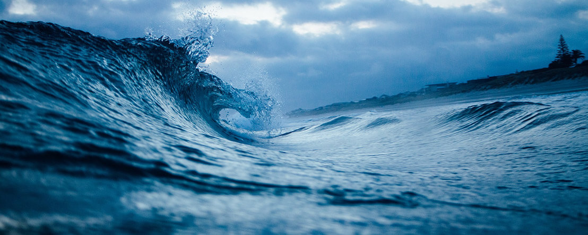
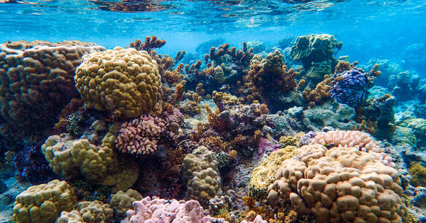
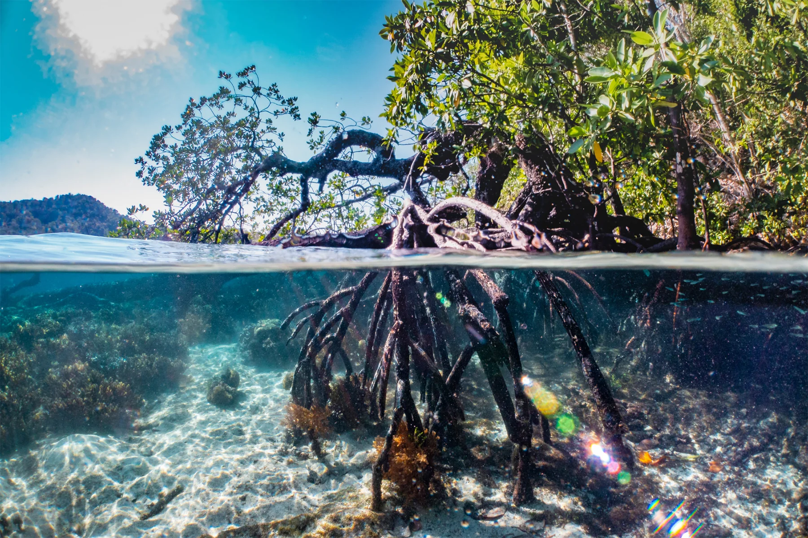
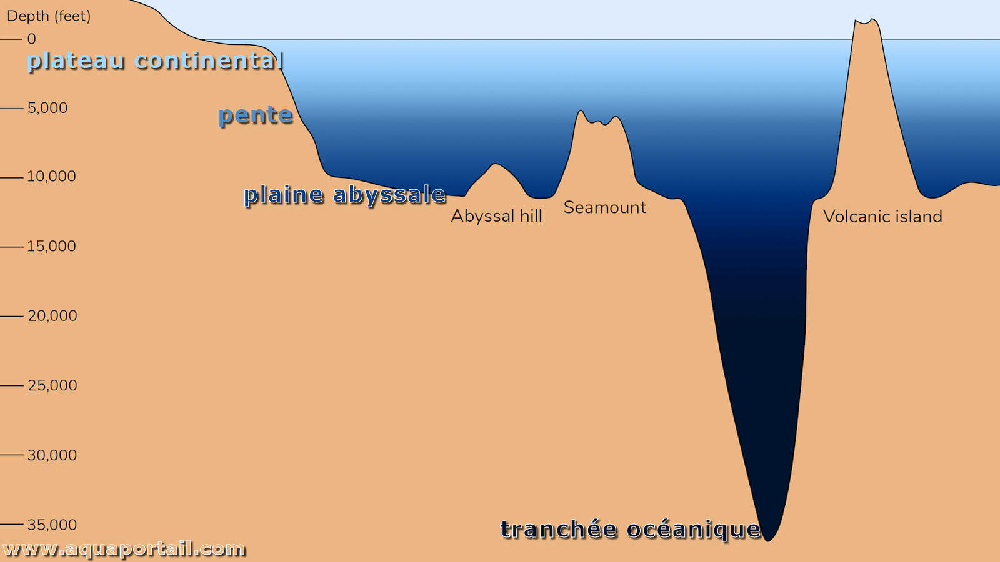

Comment le changement climatique affecte-t-il les écosystèmes marins ?
C'est quoi les écosystèmes marins?
Les écosystèmes marins sont des communautés d'organismes vivants (plantes, animaux, micro-organismes) qui interagissent avec leur environnement physique non vivant (eau, sel, climat) dans les océans, les mers et les zones côtières.
Quelques exemples:
Les Océans et Mers:
Le réchauffement climatique a des conséquences significatives sur les océans et les mers. La hausse des températures entraîne une augmentation de la température de l'eau, provoquant le blanchissement des coraux et perturbant les écosystèmes marins. Par ailleurs, l'acidification des océans, due à l'absorption accrue de dioxyde de carbone, affecte les organismes calcaires comme les coraux et les mollusques. La fonte des glaciers et l'expansion thermique de l'eau contribuent à la montée du niveau de la mer, menaçant les zones côtières. Les changements de température et de salinité perturbent également les courants océaniques, essentiels à la régulation du climat mondial. Enfin, le réchauffement des océans favorise l'intensification des événements météorologiques extrêmes, tels que les ouragans et les tempêtes, augmentant les risques pour les communautés côtières et les écosystèmes marins.
Les Récifs Coralliens:
Le réchauffement climatique a des effets dévastateurs sur les récifs coralliens, qui sont parmi les écosystèmes marins les plus vulnérables. L'augmentation de la température de l'eau provoque le blanchissement des coraux, un phénomène où les coraux expulsent leurs symbiotes algaux, les zooxanthelles, responsables de leur coloration et de leur nutrition. Sans ces algues, les coraux blanchissent, s'affaiblissent et sont plus susceptibles de mourir. De plus, l'acidification des océans, résultant de l'absorption accrue de dioxyde de carbone, réduit la capacité des coraux à construire leur squelette calcaire, essentiel à leur survie et à la formation des récifs. Ces changements affectent non seulement les coraux eux-mêmes, mais aussi les nombreuses espèces marines qui dépendent des récifs pour leur habitat, leur nourriture et leur protection. La dégradation des récifs coralliens a donc des répercussions en cascade sur la biodiversité marine et les communautés humaines qui dépendent de ces écosystèmes pour leur subsistance et leur protection côtière.
Les Mangroves:
Le réchauffement climatique a des effets perturbateurs sur les mangroves, qui sont des écosystèmes côtiers essentiels. L'élévation du niveau de la mer, causée par la fonte des glaces polaires et l'expansion thermique des eaux, submerge les mangroves et menace leur existence. Les mangroves ont également besoin de conditions spécifiques de salinité et de température pour prospérer; les changements climatiques perturbent ces conditions, affectant la croissance et la survie des plantes de mangrove. En outre, les événements météorologiques extrêmes, tels que les ouragans et les tempêtes, deviennent plus fréquents et plus intenses, causant des dommages physiques aux structures des mangroves. La dégradation des mangroves a des répercussions importantes sur les communautés locales, car elles jouent un rôle crucial dans la protection des côtes contre l'érosion, la fourniture d'habitats pour une multitude d'espèces marines, et le soutien des moyens de subsistance des populations côtières. La perte des mangroves compromet également leur capacité à stocker du carbone, ce qui exacerbe davantage le réchauffement climatique. 
Les Plaines abyssales:
Le réchauffement climatique impacte également les plaines abyssales, ces vastes étendues du fond océanique situées à de grandes profondeurs. La hausse des températures de l'eau en surface peut indirectement affecter les habitats abyssaux en modifiant les courants océaniques qui transportent les nutriments et l'oxygène vers les zones profondes. De plus, l'acidification des océans peut également atteindre ces régions, affectant les organismes qui y vivent, notamment ceux qui forment des coquilles calcaires. La stabilité de ces écosystèmes, déjà adaptés à des conditions extrêmes de pression et de température, est mise à rude épreuve par ces changements environnementaux. La dégradation des plaines abyssales peut avoir des répercussions sur la biodiversité et les cycles biogéochimiques océaniques, soulignant l'importance de limiter les impacts du réchauffement climatique sur tous les niveaux de l'écosystème marin.
